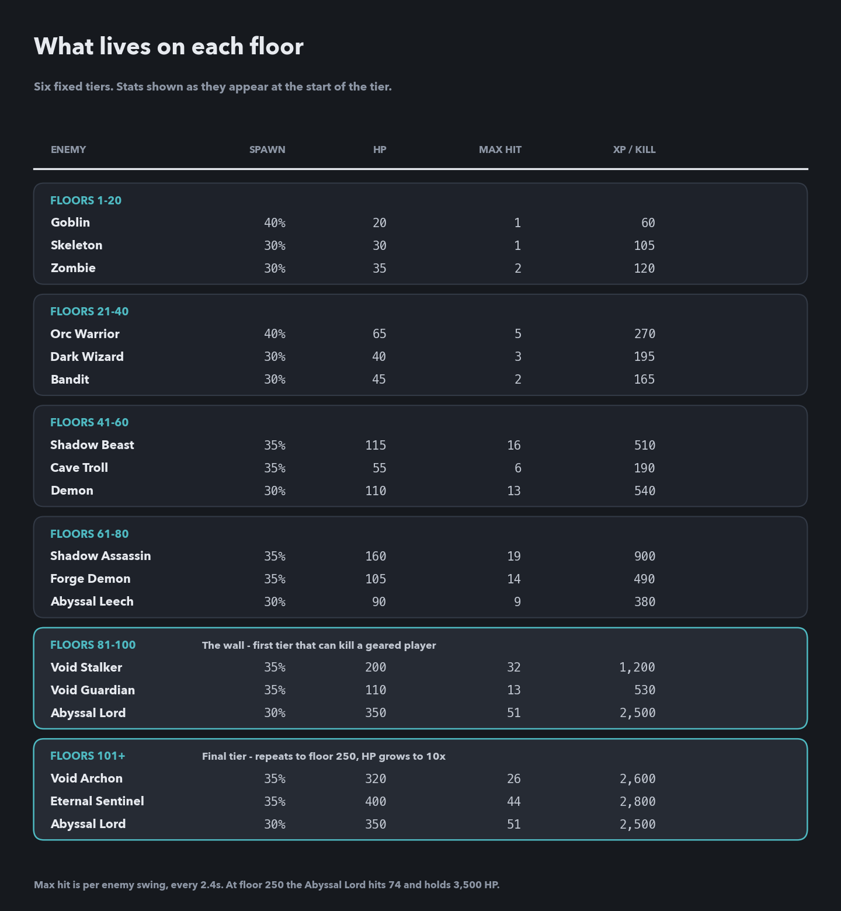
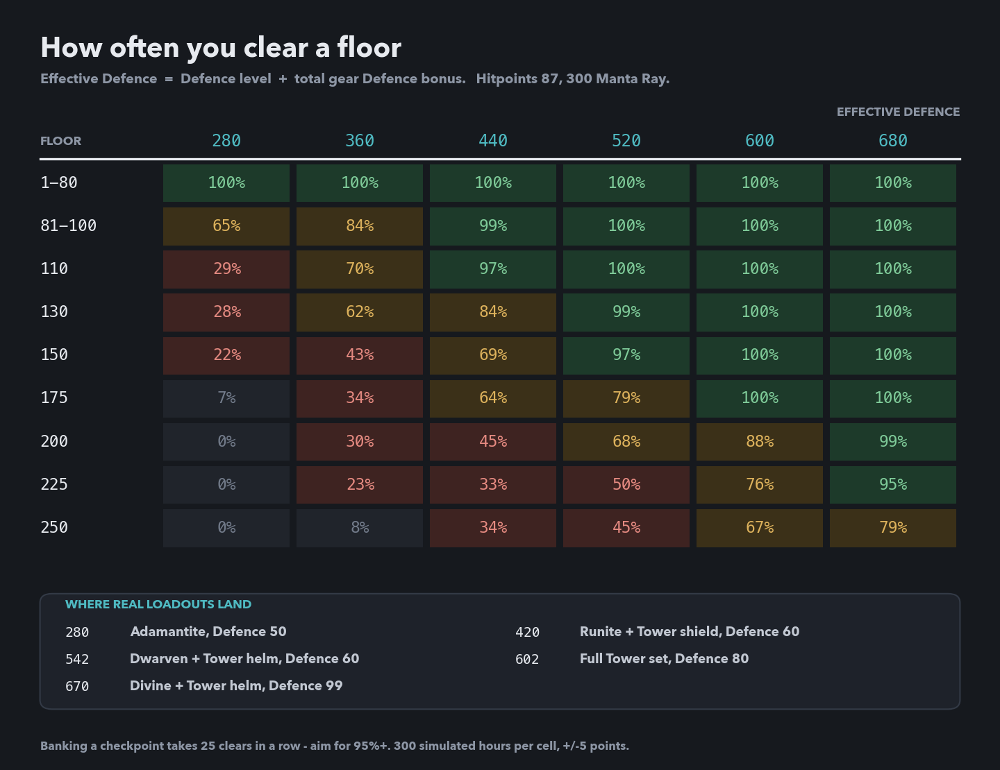
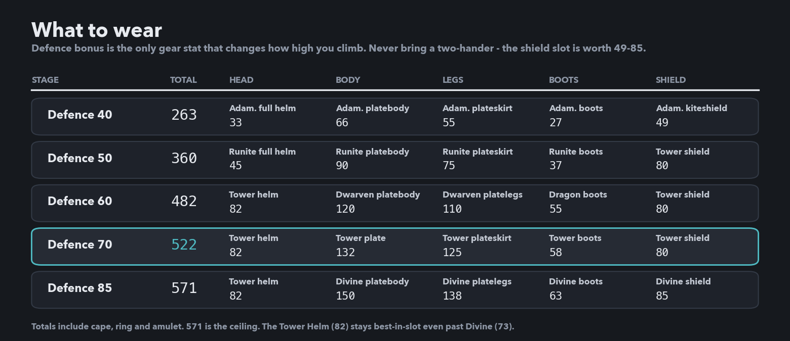
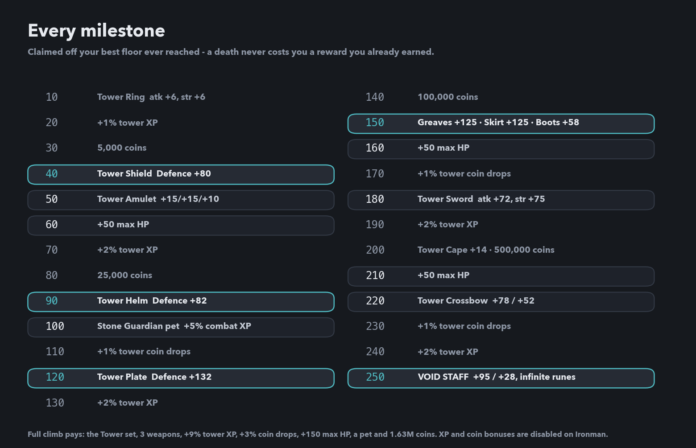

Guide: The Infinite Tower
Written by Michael v - Last updated: 2026-08-01
What's up there, and how far you can get
The tower is a 250-floor endurance test that pays out the second-best armour set in the game. Floor bands are tagged like f81-100 throughout.
Table of contents
- Three things the whole guide is built on
- How a floor is resolved
- What lives on each floor
- The Defence you need, floor by floor
- What to wear
- Where the Defence comes from, part 1: Smithing
- Where the Defence comes from, part 2: drops and quests
- The Defence level you need to wear any of it
- Every milestone, and what it's worth
- The climb
- Food, and the 300-item cap
- Running the tower as an Ironman
- So should you run it?
Three things the whole guide is built on
- Kills don't matter. A floor is cleared by surviving 60 minutes. Damage only buys loot and XP.
- Progress never rolls back. Death drops your current floor to the last 25-floor checkpoint, but your best floor, and every milestone it unlocked, is permanent.
- Only Defence decides how high you go. Incoming damage is roughly . Double your Defence, halve the damage you take.
Effective Defence = your Defence level + the total Defence bonus of all eight armour slots. 90 gear Defence is worth exactly 90 Defence levels, and every number below uses it.
It ends at 250. Enemy scaling and the reward table both stop there.
-# Note: This guide assumes addy/87 hp becasue I made it for myself and that's what I have. This guide was formatted/edited with the use of generative AI. Feel free to provide feedback and I will work to keep it accurate/updated over time.
How a floor is resolved
The game simulates the whole hour up front as 60 one-minute frames. Each minute is 25 attack ticks, more with a fast weapon, though the enemy always swings on a fixed 2.4-second cadence.
1. The game rolls an enemy. Three types from the floor's tier, weighted.
2. You trade hits for the minute. Your hit chance is your attack stat plus gear versus that enemy's defence; theirs is their attack versus your Defence level plus your total gear Defence bonus.
3. You eat automatically. After each incoming hit, whenever you drop below your eat threshold (the share of max HP that triggers a meal) or below the enemy's max hit. Best tier first, hard-capped at 300 items per session.
4. A surviving enemy carries over. It keeps its remaining HP into the next minute. If you can't kill it you fight that same enemy for the whole hour, so a high floor is often decided by which of three enemies you roll in minute one.
5. Zero HP ends the run. Otherwise the floor is cleared.
So: bring the tankiest kit you own and stop optimising your weapon.
What lives on each floor
Six fixed tiers, and the last one repeats forever.
f1-80 Trash. A geared character clears these at 100%. Nothing in the first four tiers has a max hit above 19.
-# Goblins through Shadow Assassins.
f81-100 The wall. The first tier that can kill you. The Abyssal Lord arrives here: 350 HP and a 51 max hit, three times anything below it.
-# This is where an Adamantite climb stops.
f101+ The final tier, and the roster never changes.
-# Void Archon, Eternal Sentinel, Abyssal Lord.
How that tier scales: to floor 250, enemy HP ramps to 10× while attack and defence only reach 1.3×. High floors are longer rather than deadlier, and length is the problem: the damage you absorb scales with time spent under attack.
At floor 250 the Abyssal Lord holds 3,500 HP and hits 74; the Eternal Sentinel holds 4,000 and hits 63; the Void Archon holds 3,200 and only hits 37. Roll the Lord on a floor you can't out-damage and you take roughly twice the punishment of an Archon run, which is why clear rates plateau around 30–40% for under-geared players.

The Defence you need, floor by floor
The chart is simulated clear rate per attempt, at Hitpoints 87 with 300 Manta Ray. Higher Hitpoints shifts every row left by roughly 1.7 effective Defence per HP level.
Why 70% is not good enough: death sends you back to the checkpoint at (best floor ÷ 25) × 25, so banking a new checkpoint takes 25 clears in a row.
- At a 70% clear rate that's a 0.01% chance, or about 8,000 attempts.
- At 90% it's 7%, or roughly 14 attempts.
- At 97% it's 47%, or about two tries.
So aim for 95%+ per floor on the band you're trying to bank. Anything under 90% is farming your best-floor record rather than making progress. That still banks milestones.

What to wear
weapon Never bring a two-handed weapon. You lose the shield slot, worth 49–85 Defence.
-# A dropped Runite scimitar is a fine tower weapon: it leaves the shield on.
body/legs Body and legs are the biggest numbers, but check what you can reach. Runite body and legs needs Defence 50 and is +44 over Adamantite; Dwarven needs Defence 60 and is +65 over Runite. Body and legs are the last pieces in any Smithing tier, and in Runite both need Smithing 99.
-# Messages 6 and 7 have the routes that don't need 99.
cape/ring/amulet Fill the cape, ring and amulet slots. Worth up to 53 between them.
Ranged and magic climbers: wear the plate anyway. The tower checks Defence bonus, not style. -# Trading a platebody for robes to chase magic damage is a straight downgrade.
571 is the ceiling: Divine body/legs/boots/shield plus the Tower Helm, which at 82 stays best-in-slot even past Divine's 73.

Where the Defence comes from, part 1: Smithing
Smithing unlock order is not upgrade order. The platebody comes last in every tier.
smith 74-88 Adamantite: boots 74: 27, full helm 77: 33, kiteshield 82: 49, platelegs 86: 55, platebody 88: 66. Full Adamantite is 230 across the five armour slots, and every piece needs Defence 40.
smith 89-99 Runite: boots 89: 37, full helm 92: 45, square shield 93: 52, chainbody 96: 60, kiteshield 97: 67, platelegs 99: 75, platebody 99: 90. Full Runite is 314, and every piece needs Defence 50.
Two traps in that ladder: the Runite chainbody (60) is worse than an Adamantite platebody (66), and the Runite square shield (52) is only +3 over an Adamantite kiteshield (49).
The whole 88 to 99 Runite grind is worth +84 over full Adamantite. Only four of those eleven levels do anything: boots at 89 is +10 over Adamantite boots, full helm at 92 is +12 over the Adamantite full helm, kiteshield at 97 is +18 over the Adamantite kiteshield, and body and legs together at 99 are +44 over Adamantite body and legs.
Put that against the tower. The Tower Shield at floor 40 is +31 over an Adamantite kiteshield and the Tower Helm at floor 90 is +49 over an Adamantite full helm. Two milestones beat the entire Runite grind.
Where the Defence comes from, part 2: drops and quests
Five sources that skip the forge. Four of them beat Runite in the slot they fill.
1/25 Dragon boots (55): from the Green Dragon, in Dragon's Lair (recommended level 40) or Ancient Temple (65). Needs Defence 60. +28 over Adamantite boots, +18 over Runite boots.
-# Best boots until Tower Boots (58) at floor 150, and farmable from Combat 40.
points shop Slayer gear: no Smithing at all, and it needs only Defence 45. Platebody 350 points for 80 Defence, platelegs or plateskirt 250 for 65, helm 400 for 40; the platebody is +14 over the Adamantite platebody.
-# Ironman-safe, since it spends Slayer points rather than coins.
1/25 each Gilded gear: from the Vault Guardian raid. Needs Combat 100, the monument built, and Defence 60. Platebody 95, kiteshield 71, full helmet 48; that platebody beats Runite's 90 and costs zero Smithing levels.
-# Later raids are far stingier: Obsidian Colossus and Brood Empress at 1/67, the World Ender at 1/67 and 1/100.
base 1/100 Dwarven gear: daily quest rewards, narrowing by two per claim without a drop (1/100, 1/98, 1/96 and so on) until it lands. Needs Defence 60. Platebody 120, platelegs 110, shield 68, helm 58, boots 50.
-# The pool is 17 items wide including tools.
base 1/26 Divine gear: weekly quest rewards, multiplied by 1.5 for every week you miss and capped at guaranteed. Needs Defence 85. Platebody 150, platelegs 138, shield 85, helm 73, boots 63.
The Defence level you need to wear any of it
- Defence 40: Adamantite
- Defence 45: Slayer gear
- Defence 50: Runite, Tower Shield
- Defence 60: Tower Helm, Dwarven, Gilded, Dragon boots
- Defence 70: Tower Plate, Greaves, Plateskirt and Boots, Ring of Suffering
- Defence 85: Divine
Have Defence 70 banked before you push past floor 100. Reach floor 120 or 150 under it and the Tower Plate, greaves and boots sit in your bag unusable.
What the three accessory slots cost. The Defence Cape (15) is the Defence 99 skill cape. The Ring of Suffering (18) needs Defence 70. You then buy it for 500,000 coins at the Merchant's Guild with Mercantile 80, or steal it from a Knight at Thieving 80 on a 0.6% chance. The Amulet of the Void (20) needs Attack 80 and Defence 80, plus a 1/500 drop from the Void Sovereign at Combat 110.
Fill them early with: any skill cape (5), a Platinum Diamond Ring (7, needs Crafting 76) or Wraithbone Ring (8, needs Defence 40), and the Tower Amulet (10, needs Attack 50). Around 22 rather than 53.
Worked example, Smithing 88 with Dragon boots: full Adamantite is 230; Dragon boots make it 258. Skill cape, crafted ring and Tower Amulet put you near 280 before the tower gives you anything, and the Shield at floor 40 plus the Helm at floor 90 add +80 over the Adamantite pieces they replace.
Every milestone, and what it's worth
Claimed off your best floor ever reached.
The five that matter:
- f40 Tower Shield, Defence 80: replaces an Adamantite kiteshield's 49.
- f90 Tower Helm, Defence 82: best-in-slot head for the entire game.
- f120 Tower Plate, Defence 132: the biggest single jump on the ladder, +66 over the Adamantite platebody.
- f150 Greaves 125, Plateskirt 125, Boots 58: completes the set, +101 over Adamantite legs and boots.
- f250 Void Staff: magic attack +95, magic damage +28, infinite runes for every spell.
Everything else, totalled: +9% tower XP, +3% tower coin drops, +150 max HP, a 5% Combat-XP pet at f100, the Tower Sword and Crossbow, and 1.63 million coins.
Ironman: See below for more details, you're more limited

The climb
Session counts are medians from a full simulated loop, starting in Adamantite at Combat 100 and equipping each milestone as it drops. One session runs 40–60 minutes.
f1-80 Free floors. Just queue them. (~80 sessions) Equip the Tower Shield at floor 40 the moment it drops.
f81-100 The first real wall. Upgrade before you push. (~75 more) Pure Adamantite is a ~65% clear here. That nudges your record up, but it is nowhere near enough to bank the checkpoint at 100. Runite body and legs take you to ~360 and 84%, though both pieces need Smithing 99. A Gilded or Slayer platebody (message 7) covers most of that with no forge time. The Tower Helm at floor 90 is the goal of this stage, and floor 100 banks the checkpoint that makes everything above it repeatable.
f101-150 Bootstrap on tower gear. (~160 more) The Tower Plate at 120 and the legs and boots at 150 roughly double the Defence you started with. Defence 60 for Dwarven body and legs before floor 130 is worth about 30 percentage points per floor.
-# Start claiming dailies now: the pity counter only moves when you claim.
f151-200 Comfortable, if the set is complete. (~125 more) The full Tower set is near 522 effective Defence: ~79% at floor 175, ~68% at 200. The checkpoint at 200 is the last one that banks quickly.
-# The Aegis blessing (35 Defence) at Prayer 99 and a Super Defence potion (8 Defence) are together worth about half a gear tier.
f201-250 Max your stats or don't bother. (~2,000 more) 25 straight clears at floor 250 is thousands of attempts in the full Tower set at Combat 100, and only about a quarter of simulated climbs finish inside 4,000 sessions. 99 Attack/Strength/Defence/Hitpoints plus Divine armour and the Tower Helm puts you at ~670 effective Defence and an 87% clear at floor 250: about 30 attempts.
Food, and the 300-item cap
The cap means your whole healing pool is 300 × heal per item. Above floor 150, budget about 5,500 HP per attempt.
| Fish / Cook | Food | Heal | Pool | XP to Unlock |
|---|---|---|---|---|
| 40 / 30 | Tuna | 10 | 3,000 | 50,587 |
| 50 / 40 | Lobster | 12 | 3,600 | 138,557 |
| 55 / 50 | Swordfish | 14 | 4,200 | 267,969 |
| 60 / 62 | Monkfish | 16 | 4,800 | 607,546 |
| 70 / 80 | Shark | 20 | 6,000 | 2,723,695 |
| 80 / 82 | Sea Turtle | 21 | 6,300 | 4,407,155 |
| 85 / 91 | Manta Ray | 22 | 6,600 | 9,161,425 |
-# XP is both skills summed from level 1. Every fish is 1 second per catch and every recipe 60 seconds per item at every tier, so higher food is not slower to farm, only slower to unlock.
Stop at Shark. It reaches 91% of Manta Ray's pool for 30% of the XP. Manta Ray is +300 pool over Sea Turtle and costs 4.75M XP to get there, or 15,848 XP per point against 147 at the bottom of the ladder.
Nothing below Shark reaches the floor-150 budget. Shark covers 5,500 in 275 items; Monkfish would need 344 and the cap stops you at 300.
Cooking is the bottleneck, not Fishing. A 300-item load is 5 minutes of Fishing and 5 hours of Cooking, so banking a few thousand is days of it.
The shortcut: buy it. The Inn sells three foods a day, with no level requirement and no stock limit. A small (heal 1–7) is 100 coins, a medium (8–14) is 250, and a large (15+) is 500. The large rotates daily between Monkfish, Shark, Sea Turtle and Manta Ray. A full 300-item load runs 150,000 coins.
Leave the eat threshold near 50%. Push it to 90% and you waste healing against your HP cap; drop it too low and a burst kills you before the auto-eat fires.
Running the tower as an Ironman
Every buy path is blocked; you can only sell.
What you lose: - The Inn: no bought food, so you fish and cook every item yourself. Shark is the right target for everyone, but Ironman removes the option to buy your way past the grind. - The floor-100 pet: pet boosts return zero for Ironman in the tower's own code, so the Stone Guardian's +5% Combat XP never applies. - The +9% XP and +3% coin milestones: forced to 1.0 on collection. With the pet, that is three of the six items in the "everything else" pile dead. - The Merchant's Guild Ring of Suffering: Thieving 80 and the 0.6% Knight steal is your only route to the ring's 18.
What still works: every gear and max-HP milestone in full, Smithing, and all five routes in message 7: Dragon boots, Gilded raids, Dwarven dailies, Divine weeklies and the Slayer points shop. Defence blessings are the one blessing type you keep, so the Aegis blessing's 35 Defence is still yours.
Ironman changes how you supply a climb, not how high you can get. Your ceiling is the same 571 as anyone else's.
So should you run it?
Short version: yes to 150, probably to 200, and only after you max to 250.
f1-150 Yes, for the armour. The only fixed source of a full end-game armour set: every piece sits on a set floor, so there's no drop table to fight. Around 300 sessions gets you ~500 Defence bonus, +50 max HP and a permanent Combat-XP pet.
f151-200 Yes, if you're already there. The clear rate is still comfortable in the full set, and the Tower Sword and Crossbow are upgrades worth having.
f201-250 Completionist project. The Void Staff is the best magic weapon in the game, but the last two checkpoints demand maxed combat stats and Divine armour to be anything other than a lottery.
f251+ Never. Same enemies, same scaling, no rewards.
And don't run the tower for XP. Floor 70 gives about 96 kills an hour; floor 150 gives 12.
This guide has been written (generally) by Idle Fantasy player/s and may contain inaccuracies. If you have any questions or notice an error on this page, consider mentioning it on the Discord, via GitHub discussions, or by contacting the author (Michael v)
Want to learn how you can make your own guide? Check out How to add strategy guides to the wiki